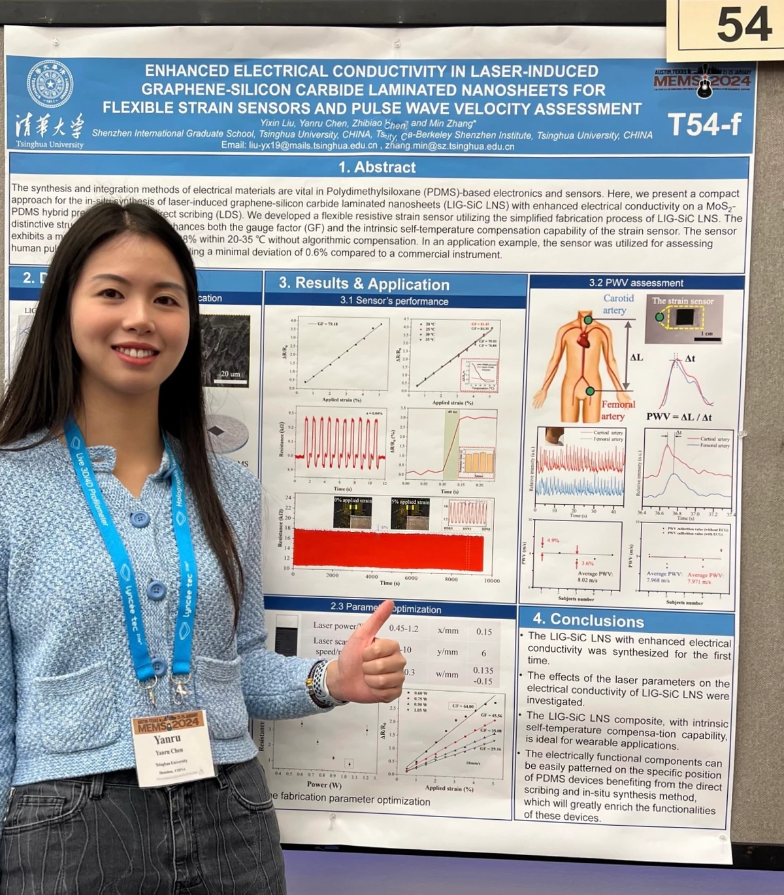
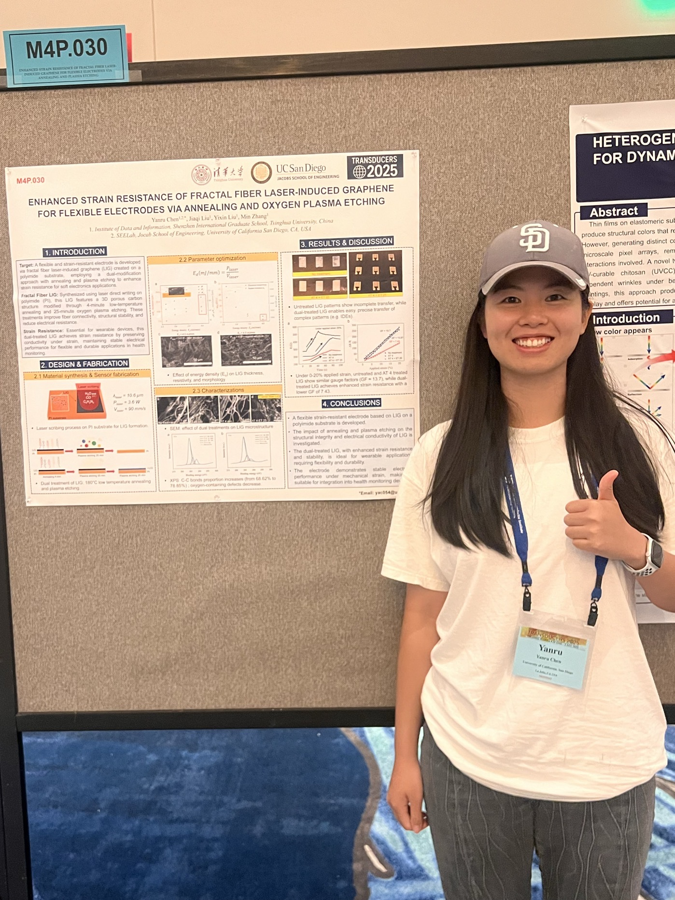
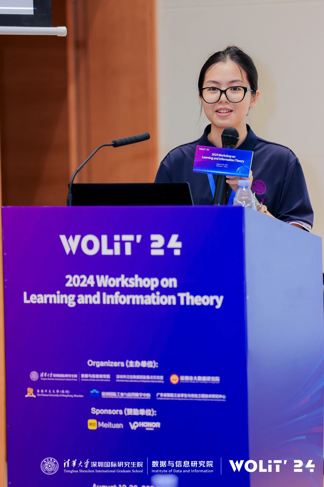
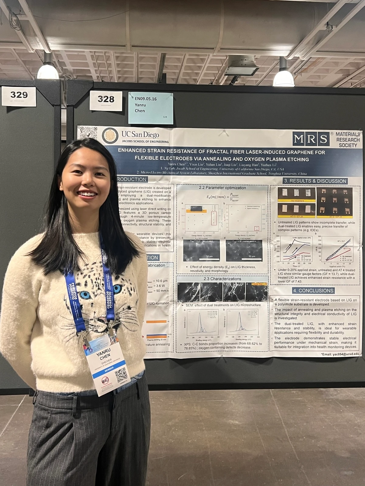
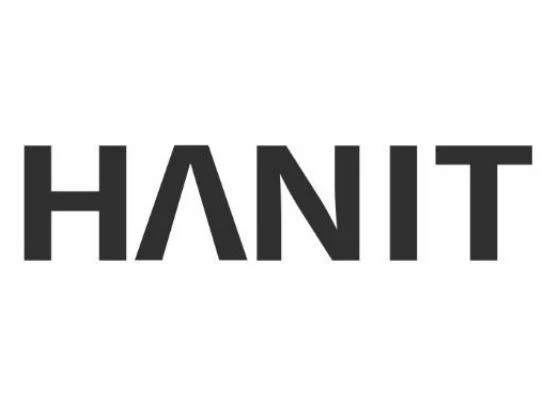

CHIME
Yanru is a Ph.D. Candidate in Electronic and Computer Engineering at the University of California San Diego (UCSD). She works with Prof. Tajana Rosing in the Systems Energy Efficiency Lab (SEELab). Outside of her academic work, Yanru enjoys singing and won the Audience Favorite Award in Jilin University singer competition.





Through MITACS at University of Western Ontario, I contributed to a neuroscience project using texture analysis to extract microvascular signals from mouse heart videos and reconstructed 3D images—enabling cardiac blood flow heterogeneity diagnosis.
Presented two papers at EMBC 2020: “Quantifying Microvascular Alterations Due to a Pharmacological Agent” and “Fractal Dimension-Based Texture Analysis of CT Perfusion Imaging.”
Visited School of Mathematical Sciences and School of Electrical & Electronic Engineering at NUS and NTU. Attended lectures on advanced semiconductor materials and had discussions with professors. Experienced Singapore culture.
Attended workshops on micromaterials and devices at HKU, HKUST, and CityU. Learned from Prof. Li-Hsing Chen on brain-machine interfaces, visited 5G research labs, and saw MIT Robotics Atlas demonstration. This experience broadened my interdisciplinary research perspective.